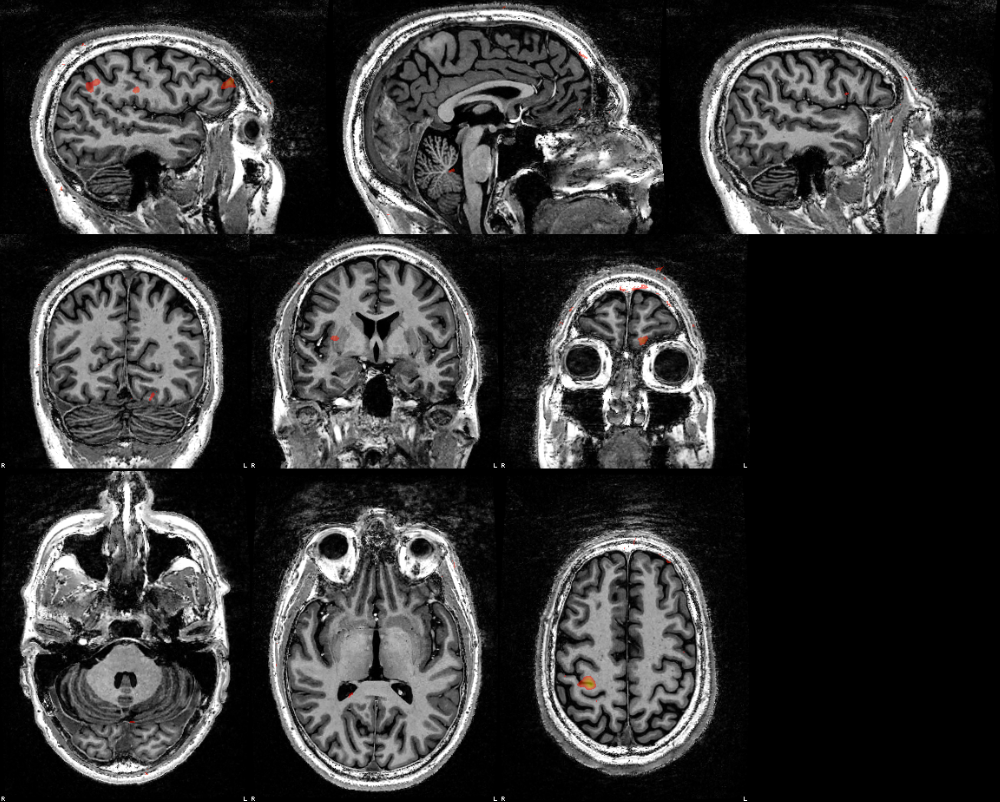
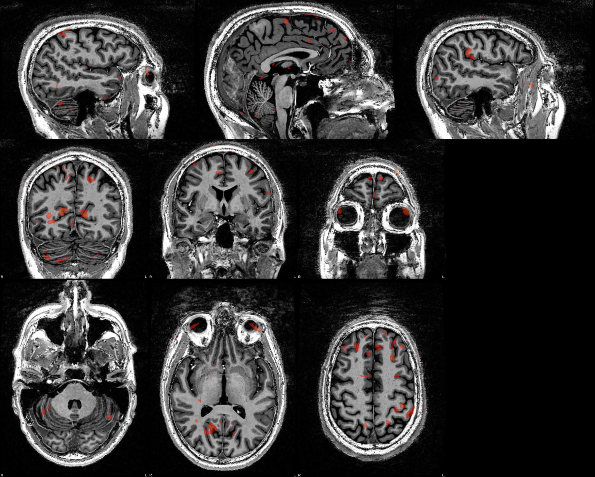
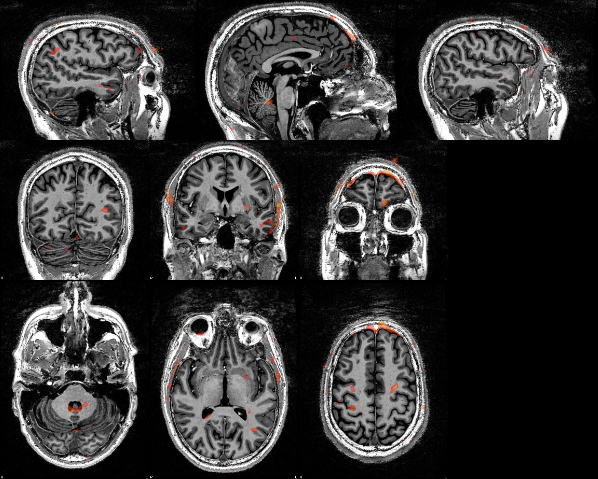
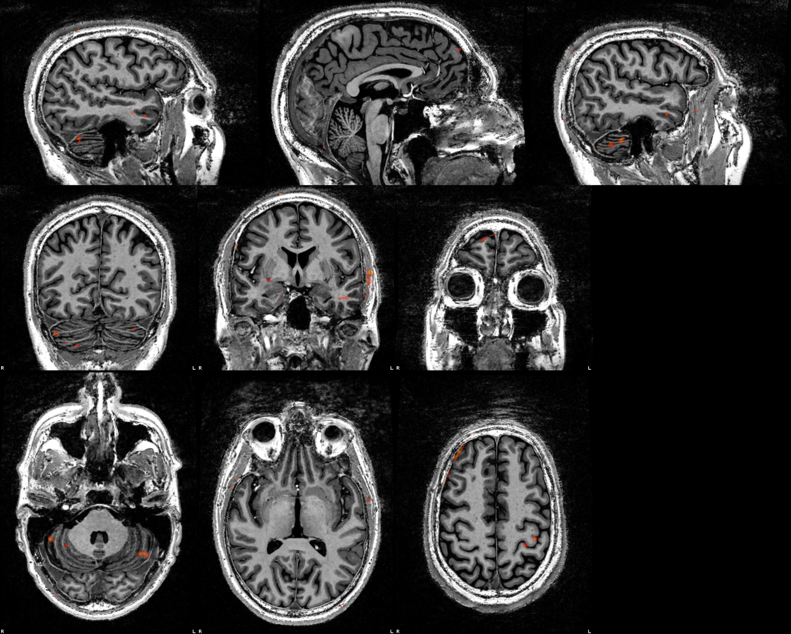

Methods
Single-echo run. Distortion correction: SynthSR + greedy 3D warp (fieldmap-less). Fuzzy ripple correction: runwise. Motion correction, distortion correction and the BOLD→T1w registration were applied in one interpolation.
The preprocessed series in T1w space (87 volumes, TR 3.4 s) was smoothed with a 5 mm FWHM Gaussian. 1 non-steady-state volume was dropped from the model. Design matrix: left and right block regressors (onsets and durations from the events file) convolved with a double-gamma HRF (SPM canonical: gamma shapes 6 and 16 s, undershoot ratio 1:6) and sampled at each volume's StartTime (slice-timing or FRISGO-spline reference; mid-TR if absent); an intercept; a discrete cosine basis with a 128 s high-pass cutoff; and the 6 rigid-body motion parameters (3 translations, 3 rotations) from head-motion estimation, without derivatives or squares. Other confounds (global, white-matter and CSF signals, CompCor, framewise displacement, DVARS) are in the confounds file but were not used. Serial correlation: lag-1 autocorrelation of the OLS residuals, spatially smoothed (5 mm), then a Prais-Winsten AR(1) refit per voxel. Contrasts: [1 −1], [−1 1], [1 0], [0 1]; df 73, stored in each t map's NIfTI intent. Figures show t ≥ 3.21 (p < 0.001, one-sided, uncorrected for multiple comparisons).
Head motion
Large or block-locked motion here can masquerade as activation.
Translation (mm; range -0.43 to 0.33)
Rotation (°; range -1.08 to 0.24)
Results
| Contrast | Peak t | Peak (mm) | Voxels shown | Median AR(1) | Map |
|---|---|---|---|---|---|
| left > right [1 -1] | 7.09 | 21, -18, 44 | 5991 | 0.01 | t map |
| right > left [-1 1] | 7.19 | 20, -37, -62 | 30308 | 0.01 | t map |
| left > baseline [1 0] | 8.48 | -53, 77, 6 | 38109 | 0.01 | t map |
| right > baseline [0 1] | 5.00 | 43, 51, -20 | 7091 | 0.01 | t map |
left > right [1 -1]

right > left [-1 1]

left > baseline [1 0]

right > baseline [0 1]
